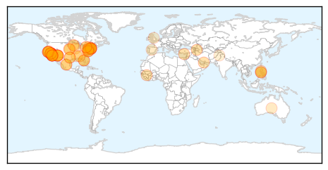
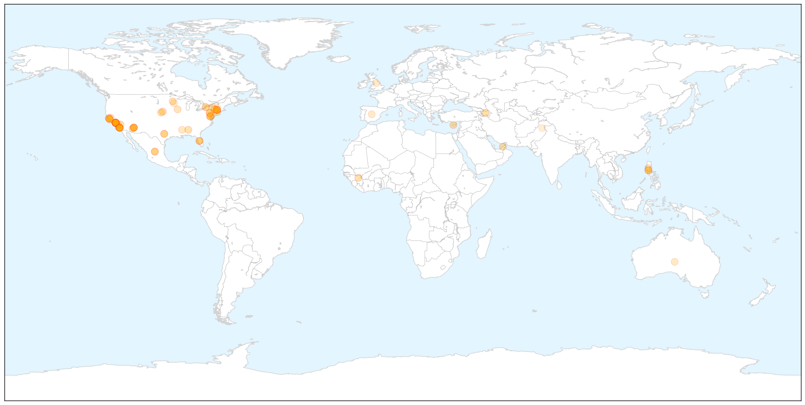
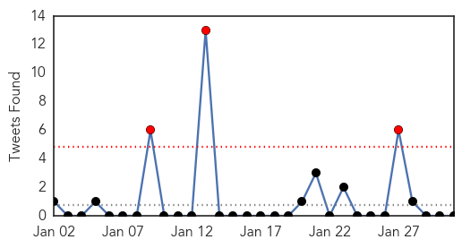

Measles
30-Day Web Trend
23 alerts, 0 warnings

30-Day Twitter Trend
3 alerts, 0 warnings

Article Locations

X

Article Confidences

Top Articles:
- 0.998
- Arizona Officials Say Nearly 1,000 People May Have Been Exposed to Measles
- 0.997
- CDC Says Disneyland Measles Outbreak Likely Originated from Overseas
- 0.994
- Measles outbreak exposes holes in vaccine coverage
- 0.992
- CDC confirms 94 measles cases in eight states in US
- 0.992
- Anxiety rises as number of measles cases grows
- 0.992
- Measles continues to spread as scientists urge parents to vaccinate children
- 0.989
- Why Do We Have A Measles Crisis?
- 0.988
- Measles Cases Mount; White House Urges Vaccinations
- 0.981
- Disneyland Measles Outbreak Now Infecting People Outside California
- 0.979
- More Measles Cases Seen in January Than in Typical Year: CDC
- 0.976
- Four people with measles traveled through Florida, officials say
- 0.976
- Understand the Measles Outbreak with this One Weird Number
- 0.974
- Measles cases in outbreak linked to Disney swell to 107
- 0.973
- More Than 100 Cases Of Measles Now Confirmed In U.S.
- 0.972
- FDOH urges Florida residents to get vaccinated against measles
- 0.972
- More than 100 cases of measles now confirmed in U.S.
- 0.969
- College Student with Measles Rode Amtrak up the Hudson River
- 0.967
- Measles outbreak: Public health official confirm more than 100 cases in US
- 0.966
- CDC says measles vaccination is key to prevention
- 0.966
- Three Cases Confirmed In San Francisco Bay Area As Total U.S. Cases Top 100
- 0.966
- Measles cases in California rise by 54% in nine days
- 0.965
- Pennsylvania: Possible measles exposure in Shippensburg, Chambersburg
- 0.965
- Measles Is A Killer: It Took 145,000 Lives Worldwide Last Year
- 0.964
- More measles cases found in California
- 0.963
- Measles cases in California up 54% in one week
- 0.962
- More Measles cases found in California
- 0.962
- Measles Q&A: What you need to know
- 0.959
- Measles Is A Killer: It Took 145,000 Lives Worldwide Last Year
- 0.957
- Solano sees first case of measles this year
- 0.957
- Measles outbreak reopens vaccination fight
- 0.957
- Disneyland Measles Outbreak Now Infecting People Outside California
- 0.946
- California measles outbreak
- 0.945
- Measles continues to spread in United States
- 0.939
- As measles spreads in US, none is in NH – but debate over vaccines is
- 0.935
- Young child confirmed to have measles in Solano County
- 0.924
- Measles student no longer infectious, but officials wait for signs of spread
- 0.921
- Amid growing vaccination debate, measles continues to spread and is now in New York state
- 0.919
- Several children possibly exposed to measles at Blair child care under 21-day quarantine
- 0.918
- No additional measles cases
- 0.912
- Measles outbreak has now spread to 14 states
- 0.912
- More than 100 cases of measles now confirmed in US
- 0.911
- With vaccines available, it's dangerous in Fantasyland
- 0.905
- Student with measles rode Amtrak train from New York Penn Station; U.S. cases top 100
- 0.887
- Disney measles outbreak shines light on vaccines in Yolo County
- 0.858
- College Student With Measles Boarded Train at Penn Station
- 0.858
- College Student With Measles Boarded Train at Penn Station
- 0.857
- CDC issues measles warning
- 0.856
- Measles outbreak: How to get vaccinated in Kern County
- 0.856
- Voices: Who is calling the shots on the measles vaccination?
- 0.834
- Doctors refusing unvaccinated children?
Showing top 50 articles...
Top Tweets:
-
No tweets found for Jan 31, 2015
Unknown
30-Day Web Trend
0 alerts, 0 warnings

30-Day Twitter Trend
3 alerts, 0 warnings

Article Locations


Article Confidences

Top Articles:
- 0.952
- Second case of H7N9 bird flu confirmed in British Columbia
- 0.937
- Second bird flu case confirmed in Canada – BorneoPost Online
- 0.935
- Sudan Vision Daily
- 0.934
- Plague cases rise in Madagascar, fear of more epidemics: WHO
- 0.922
- Husband of Vancouver area woman with bird flu also contracted it
- 0.917
- Chicago Tribune
- 0.917
- Chicago Tribune
- 0.917
- Chicago Tribune
- 0.917
- Chicago Tribune
- 0.917
- Chicago Tribune
- 0.917
- Chicago Tribune
- 0.917
- Chicago Tribune
- 0.917
- Chicago Tribune
- 0.917
- Chicago Tribune
- 0.917
- Chicago Tribune
- 0.917
- Chicago Tribune
- 0.917
- Chicago Tribune
- 0.859
- Forecasting the flu better using social network
- 0.820
- Forecasting the flu better using social network
- 0.794
- Ukraine talks to begin amid fierce fighting in Debaltseve
- 0.794
- Ukraine peace talks end without agreement
- 0.794
- Kurdish fighters celebrate victory in shattered Kobane
- 0.794
- Italian lawmakers elect Judge Sergio Mattarella as president
- 0.794
- IS group claims to have beheaded second Japanese hostage
- 0.794
- Chadian troops repel Boko Haram attack in Cameroon
- 0.792
- Respiratory virus cases nearly double in 1 month - Story
- 0.789
- New TB Cases Confirmed in Charlotte - Story
- 0.774
- Beechwood rehab center not accepting new patients due to confirmed flu case
- 0.773
- CJAD 800 – News. Talk. Radio. :: New research shows this year's flu shot highly inneffective :: News
- 0.710
- Better forecasting of the flu, using Big and Traditional Data
- 0.703
- Nigeria H5N1 bird flu spreads to four more states, total 11
- 0.701
- the edge of knowledge
- 0.698
- S. Korea reports another suspected foot-and-mouth case among cattle
- 0.659
- Only apples from California contaminated
- 0.650
- SVHC comes out pro-fluoride : Rutland Herald Online
- 0.632
- Why is the world not fatigued by Zimbabwe’s situation?
- 0.621
- Visicular Stomatitis Outbreak Over 8 Months And 4 States Later
- 0.601
- Knowing when to head straight to ER could save a life
- 0.600
- Norway finds first case of mad cow disease, says food safe
- 0.540
- "Mugabe is Africa's choice, the West will have to deal with it"
- 0.535
- Health camps of US doctors for poor patients in Hyderabad
- 0.531
- Mugabe is Africa’s choice, the West will have to deal with it – Kwesi Pratt
- 0.503
- Dubai health chiefs close four clinics for violations
Top Tweets:
-
No tweets found for Jan 31, 2015